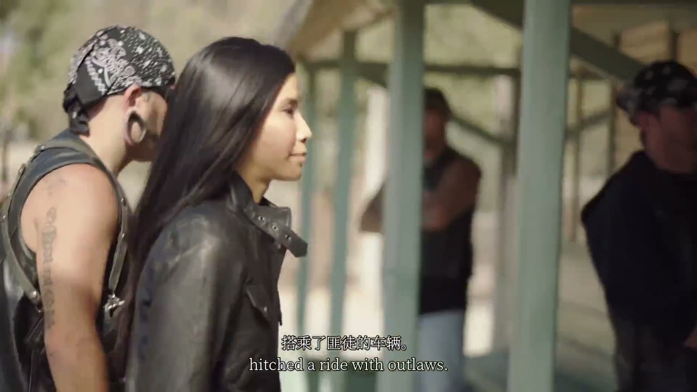

案例 01 · 旁白介绍
一段没有声音的 4K 樱花空镜，加一条旁白轨和一条 BGM 轨，导出中英双语、带字幕与不带字幕的 4 个成品。
案例 02 · 添加字幕
一段 30 秒的英文访谈，识别、翻译并校对 6 句对白，在导出窗口设置双语字幕，烧录进画面。

Case 02 · 已完成
给视频加字幕
识别、翻译、校对之后，在导出窗口调双语顺序、位置和字号，把字幕烧进画面。中文页看中文版，英文页看韩语版。
双语字幕
字幕烧录
中文 / 한국어
过程录屏
查看完整案例 →
更多案例制作中。新的案例会沿用同样的「原素材 → 制作步骤 → 成品 → 界面截图」结构。